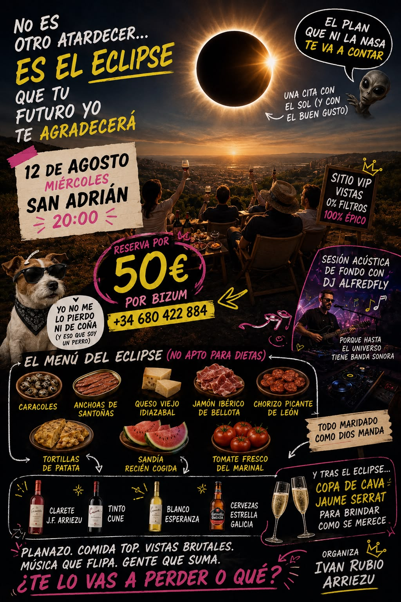

Eclipse 12 Agosto
Prepárate para el eclipse solar
El próximo 12 de agosto, tendremos la suerte de disfrutar de uno de los fenómenos astronómicos más impresionantes de los últimos años: un Eclipse Solar, para el cual tenemos el lujo de ofrecer uno de los mejores lugares de todo el país para disfrutar de este acontecimiento. Pondremos a disposición gafas homologadas (CE & ISO) para observar el eclipse con seguridad, una merienda premium y un entorno exclusivo donde compartir la velada con la mejor compañía posible: la familia Arriezu.
Mientras el Sol y la Luna deciden quién manda ahí arriba, nosotros resolveremos el verdadero dilema: por dónde empezar. Habrá caracoles para los más valientes, anchoas de Santoña capaces de reconciliar familias, queso viejo Idiazabal con más carácter que algunos invitados, jamón ibérico de bellota cortado como merece la ocasión, chorizo picante de León para despertar los sentidos, una tortilla de patatas de las que generan debate nacional (chorreante), sandía recién cogida para combatir el calor y tomate fresco del Marinal.
La alineación líquida tampoco se queda atrás. Abriremos la jornada con el legendario Clarete JF Arriezu, un vino de la casa con tanta personalidad que algunos aseguran que eclipsa al propio eclipse. También ofreceremos el tinto CVNE pondrá elegancia y cuerpo a la mesa, mientras que el blanco Esperanza llegará fresco y aromático. Tampoco faltarán las siempre fiables Estrella Galicia bien frías y, cuando llegue el momento de brindar por este fenómeno astronómico, levantaremos las copas con cava Jaume Serra que hará que hasta las estrellas parezcan brindar con nosotros.
El maestro DJ Alfredfly ha preparado una sesión mística especialmente diseñada para sincronizar con las energías del universo y los movimientos celestes. La selección musical ha sido elaborada tras rigurosos estudios astrológicos, varias conversaciones con la Luna y, según fuentes poco fiables, alguna consulta directa con Saturno tras unos porrillos en Egipto. El objetivo es que nadie sepa si está bailando por el ritmo, por la emoción del eclipse o por la décima cerveza, aunque cualquiera de las tres opciones será perfectamente válida.

¿Listo para realizar tu reserva?
Contacta con Iván en el número +34 680422884, por un módico precio de 49,99€